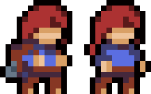

Pick the format that suits your skin the best
No-backpack only

(recommended) This template will always use the no-backpack sprite. All missing animations are filled in from the backpack sprite.
491 sprites
Backpack only
(recommended) This template will always use the backpack sprite. Has no-backpack exclusive animations.
491 sprites
Full skinmod
Use this if you want your character to have a separate set of sprites without a backpack. Works just like the normal game.
786 sprites
Reduced spritecount

This template changes, replaces and reuses animations to reduce the sprite count as much as possible. Get 85% of the quality with 1/4th of the work.
198 sprites